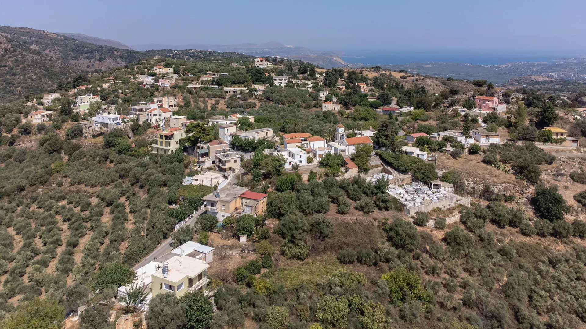
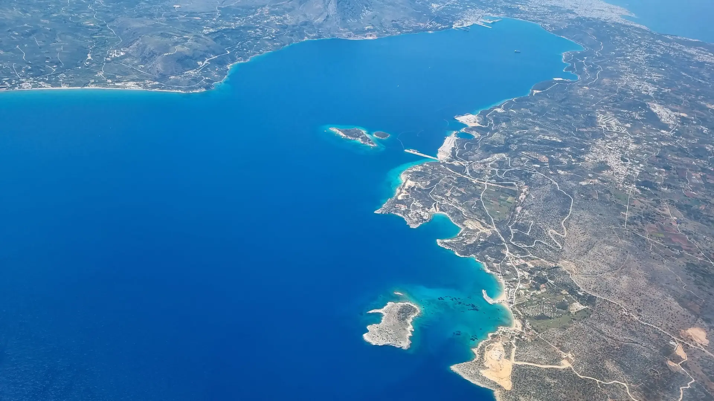

Faites vérifier un bien
en Crète, sans prendre
l'avion.
Un bien repéré autour de Chania ou dans l'ouest de la Crète ? Envoyez l'annonce : nous nous rendons sur place sous quelques jours et vous recevez un rapport terrain indépendant en 48h — avant de réserver un vol ou d'aller plus loin. Un bien situé ailleurs en Crète peut aussi nous être transmis et sera étudié sur devis.

Décidez sur des faits vérifiés
sur place — pas sur des photos.
Une annonce ne montre jamais l'accès réel, le voisinage, l'état du bâti ou les nuisances alentour. Je me déplace pour vérifier ces points avant que vous n'organisiez un voyage — ou que vous ne fassiez une offre.
Vous gardez la main sur la décision de vous déplacer, de négocier ou de passer votre chemin — en connaissance de cause.
Le bon moment pour
faire vérifier un bien.
Une Visite Proxy prend tout son sens à des moments précis de votre réflexion — avant que la décision ne devienne plus coûteuse à corriger.
Un regard terrain,
factuel et indépendant.
Analyse de l'annonce, visite terrain de 60 à 75 minutes, rapport PDF complet livré sous 48h — le détail de chaque étape juste en dessous.
Reporting terrain indépendant — ne remplace pas une expertise technique, juridique ou notariale. Visite intérieure selon accès autorisé par le vendeur ou l'agence.
🔒 Bien retiré du marché ou devenu inaccessible avant votre mission ? Remboursement ou transfert intégral vers un autre bien pendant 90 jours (détail dans nos CGV).

Trois étapes,
avant de décider.
Particulièrement utile
si vous êtes dans ce cas.
La Visite Proxy s'adresse en priorité aux acheteurs qui ne peuvent pas — ou ne veulent pas encore — se déplacer.
Chania, l'ouest et Réthymnon.
L'ouest est notre terrain quotidien : Chania, Akrotiri, Apokoronas et Réthymnon, aux tarifs fixes indiqués plus haut. Un bien ailleurs en Crète — Héraklion, le sud de l'île, Hersonissos, Sitia, Lassithi ? Envoyez-nous l'annonce : nous étudions la faisabilité au cas par cas et revenons vers vous avec un devis chiffré selon la distance et nos disponibilités.
Ce que contient
le rapport, en détail.
Un vrai bilan, pas une simple confirmation de ce que dit déjà l'annonce. Voici, section par section, tout ce que couvre le rapport PDF que vous recevez.
Sur la Visite Proxy.
Que vérifiez-vous pendant une Visite Proxy ?
Pouvez-vous visiter l'intérieur du bien ?
Le rapport remplace-t-il une expertise technique ?
Pouvez-vous vous occuper des démarches juridiques de l'achat (avocat, notaire) ?
Combien coûte une Visite Proxy ?
Que comprend l'option drone ?
Pouvez-vous visiter un bien partout en Crète ?
Êtes-vous une agence immobilière ?
Et si le bien est retiré du marché avant la visite ?
Décrivez
le bien repéré.
Lien de l'annonce, zone et points à vérifier : nous confirmons le périmètre de la mission avant tout paiement.
Prêt à faire vérifier
votre bien ?
Envoyez l'annonce — périmètre confirmé avant paiement.
ImmobilierEnCrete.fr n'est pas une agence immobilière et ne vend aucun bien. Les services proposés relèvent du reporting terrain, de l'aide à la décision et de la coordination acheteur. Les vérifications juridiques, notariales, fiscales et techniques sont réalisées par des professionnels qualifiés indépendants. Le client garde toujours la décision finale.